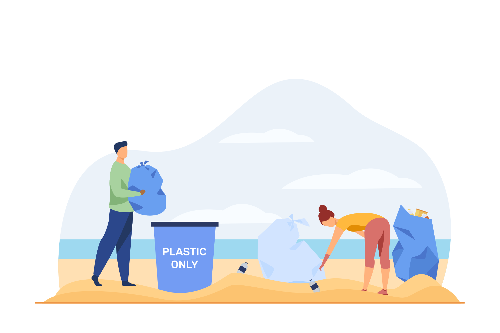

Lihat !
Membersihkan lingkungan sekitar tidak hanya meningkatkan estetika tetapi juga membantu menjaga kesehatan dan kesejahteraan masyarakat. Berikut adalah panduan dan tips untuk melakukan aksi membersihkan lingkungan skala kecil, seperti memungut sampah di area sekitar rumah atau taman lokal.
Rencana dan Penjadwalan
- Tentukan area yang akan dibersihkan: misalnya, taman lokal, pantai terdekat, atau jalan sekitar rumah.
- Tentukan tanggal dan waktu yang tepat, sebaiknya ketika cuaca cerah dan tidak hujan.
Persediaan dan Perlengkapan
- Kantong sampah besar dan kuat, dan sarung tangan untuk melindungi tangan dari benda tajam atau kotor.
- Masker untuk melindungi dari debu dan bau tidak sedap.
- Penjepit sampah untuk menghindari kontak langsung dengan sampah.
- Sepatu tertutup yang nyaman untuk menghindari cedera.
Tips Efektif dalam Membersihkan Lingkungan
Edukasi dan Kesadaran
- Berikan edukasi kepada masyarakat tentang pentingnya menjaga kebersihan lingkungan.
- Pasang poster atau tanda peringatan tentang larangan membuang sampah sembarangan.
Penggunaan Alat yang Tepat
- Selalu gunakan alat pelindung seperti sarung tangan dan masker.
- Pastikan alat yang digunakan dalam kondisi baik dan bersih setelah dipakai.

Kerjasama dan Komunitas
- Libatkan lebih banyak orang untuk meningkatkan efisiensi dan jangkauan pembersihan.
- Adakan kegiatan rutin membersihkan lingkungan untuk membangun kebiasaan baik di komunitas.